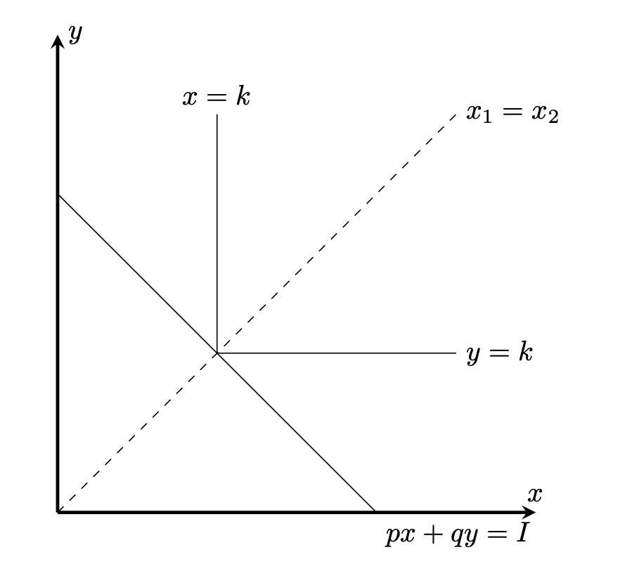

経済学で出る数学
ワークブックでじっくり攻める：応用問題
Leonchef型効用関数
【問】 効用関数$u(x,y)=\min (x,y)$，価格$p,q$，予算$I$に対し，
次のふたつの問題を考える．
\begin{align*}
v(p,q,I)=\max_{x,y}& \ u(x,y)\\[2ex]
s.t.& px+qy=I
\end{align*}
を解き，間接効用関数$v(p,q,I)$を求めなさい．
また$v(p,q,I)$は$(p,q)$について凸関数であることを示しなさい．
【解答】
$x>y$とすると，$u(x,y)=y$．予算制約式より，$y=\dfrac{I-px}{q}$だが，$x$より少し大きい$x^{\prime} > x$に対し，
$x^{\prime} = y^{\prime}＝\dfrac{I-px^{\prime}}{q}$で，
$u(x^{\prime},y^{\prime})=\dfrac{I-px^{\prime}}{q} > u(x,y)=\dfrac{I-px}{q} $なので，最適ではない．
従って最適解は$x\leq y$を満たさなければならない．同様に$x\geq y$を満たさなければならないので，最適解では$x=y$.
$x=y=k$とおくと，$pk+qk=I$より，$k=\dfrac{I}{p+q}$．
従って，
\[
v(p,q,I)=\dfrac{I}{p+q}
\]
となる．

【解答終】
$v(p,q,I)=\dfrac{I}{p+q}$の$2$階微分を求める．
\begin{align*}
\dfrac{\partial v}{\partial p}&=\dfrac{-I}{(p+q)^2}\\
\dfrac{\partial v}{\partial q}&=\dfrac{-I}{(p+q)^2}\\
\dfrac{{\partial}^2 v}{\partial p^2}&=\dfrac{2I}{(p+q)^3}\\
\dfrac{{\partial}^2 v}{\partial p \partial q}&=\dfrac{{\partial}^2 v}{\partial q \partial p}=\dfrac{2I}{(p+q)^3}\\
\dfrac{{\partial}^2 v}{\partial q^2}&=\dfrac{2I}{(p+q)^3}
\end{align*}
なので，任意の$d\neq 0$に対し，
\[
\begin{pmatrix}d & d\end{pmatrix}
\begin{pmatrix}\dfrac{2I}{(p+q)^3} &\dfrac{2I}{(p+q)^3}\\
\dfrac{2I}{(p+q)^3} &\dfrac{2I}{(p+q)^3}\end{pmatrix}
\begin{pmatrix}d\\ d\end{pmatrix}
=\dfrac{4I}{(p+q)^3}d^2>0
\]
となり，${\nabla}^2 v$は正定値．従って凸関数（参考）．
【Further Reading】
遠山智久『弱点克服 大学生のミクロ経済学』東京図書（2008）
ふろく（２）応用問題 一覧へ